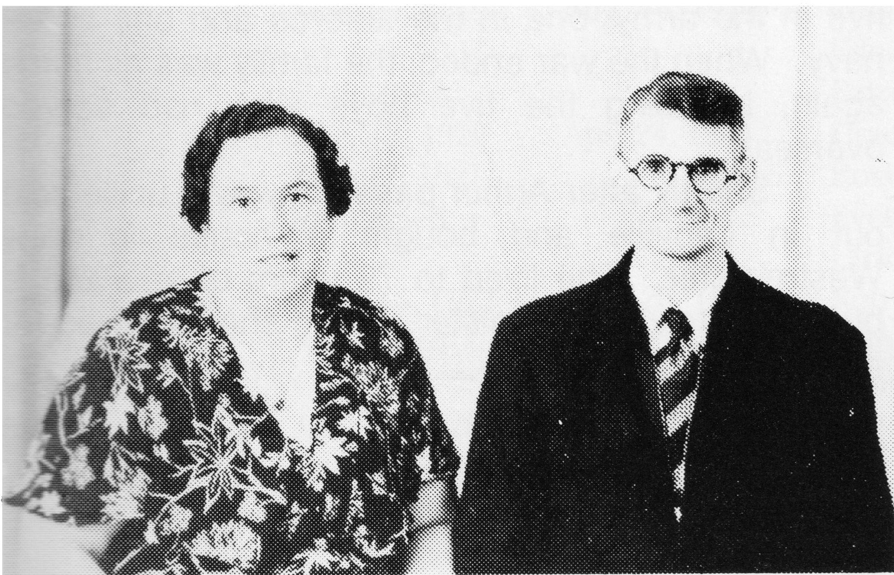

ARTHUR L'HEUREUX
Although weddings are meant to be happy occasions, Arthur's marriage to Lucille Lambert on May 29, 1906 in Jackfish Lake, Saskatchewan was marred by the fact that Arthur was very ill and had recieved the Last Sacrament of the Roman Catholic Faith. However, he recovered and raised a family of fifteen.
The seventh son, Ulric, had a gift of healing. He started showing that he indeed had this gift at the age of three. When he was about four years old, the Bishop came to the parish and blessed Ulric and his gift. He performed many healings. Only one example of his "powers" was seen when he restored Mrs. Lacombe's hearing after only three sessions with Ulric. She had previously been totally deaf.

Arthur farmed in Delmas for a time before moving to Jackfish, and finally settling in Vawn, Sask. He expanded and did mixed farming. He broke land for other folks, first with horses, and later with power machinery. He had a self contained threshing outfit consisting of cookhouse on wheels, with cook, a bunkhouse and six teams of horses. Then he increased his land holdings as his family grew. He then bought 3/4 section of land from Mr. Jules Thomson.
Each spring, he would go to his Dads ranch and bring back home young Broncos to be broken into the harness. When spring seeding had been completed and the Broncos were broke in, he would return them to his Father. In the winter, he would not stay idle but did custom wood-sawing for firewood and grain crushing for animal feed.
In 1922, Arthur had a "McLaughlen" car and in the summer time, he would load up his family to go to church at Jackfish Lake, then onto Grandma's for dinner.
In the early 20's, Arthur had a brown mare and a roan gelding pulling a high gear cutter which we used for winter travel. His horses were dressed in light harness, complimented with two banks of silver bells that completely wrapped around the horse. On the bridles, the crown strap was covered with a nickel shield, and on the forehead were fobs made of brass in the form of horse shoes, with a horses head mounted inside the horse shoe. Arthur, being a proud man, insisted that these bells and fobs be shined and polished before they were used on Sundays.
As the family grew. he needed a larger mode of travel. He called it his "carriolle" (meaning a two-seated cutter), mounted on light bob-sleds.
Occasionally in the evenings, he would take a walk to town and play pool with the boys while Lucille would sew and mend and made sure that the children did their homework.
It wasn't all hard work with no play. During the winter, they had card parties, socials and dances at different homes. (Summertime was reserved for hard work.) They would be invited to go to dances at different municipalities and because Arthur has a gas lamp, their admission would be free.
In the summer, Lucille would pick wild berries of all sorts. She would can about 300-400 quarts of wild berries a year besides tending a huge garden.
Arthur also worked dragging the highways when the Liberals were in power. When the big depression hit, he had to use the chasis of his Model T Ford as a Bennett Buggie, named after R.B. Bennett, Prime Minister of Canada at the time. The procedure was to use the frame and wheels of the Model T and remove the motor. This would then be dragged by horses.
Arthur never swore when things went bad; instead he whistled. Enemies--he had none, and was always ready to land a helping hand.
In the spring, Arthur would help at ranch branding, using his own saddle horse.
Arthur was also a School Trustee for several terms. There was also the Raleigh man who made his head-quarters at Arthur's. He would distrubute his goods all over the country side by day and return at night.
In 1925, Arthur bought the vacant Bank of Commerce Building, 2 storeys high. It was 25' by 50' and was moved from the Village of Vawn to his farm, a mile and a half away. He had contracted the moving to Jack Jolly from North Battleford for the sum of $400.00. Twenty eight teams of horses were used.
Then in 1927, his oldest daughter, Dorilla, married Dave Gelinas. All the friends and relatives were invited. Dinner was served from 12 noon to 3:00 in the afternoon. Everyone danced until the wee hours of the morning in Arthur's house.
In 1932, the drought set in and there were no crops. In 1933, he moved lock, stock and barrel to Leoville. In the winter of 1933, he moved all his farm implements by sleigh and horse teams. On April 3rd, in the early spring, he left Vawn with three wagons, four horses pulling each one, and one Bennett Buggie pulled by two horses and driven by Lucille. he also had all his milk cows and young stock. It took seventeen days to travel one hundred miles. Because it was early in the spring and everything was thawing, they ran into some very difficult times, and suffered great hardships. In some places, he nearly lost his horses in the mud and once had to put a chain around the horses' necks and pull them out.
Arthur farmed near Leoville from 1933 to 1940, and ran a blacksmith shop as well.
In 1935, Arthur got a job with two horses to operate a pile-driver while the bridge was being built at "The Big River". Maurice, one of his sons, drove the horses for his Dad. That winter the temperature went down to -72 degrees F. for four days. They couldn't work then as their camp was a tent and it was too cold to live in them.
After Arthur moved to Leoville, he never had a good wheat crop. Finally he decided to move his blacksmith shop into Leoville but kept his farm. There he began to do custom blacksmithing and did very well.
Then disaster struck. One morning, while working in his shop. a piece fo metal flew into his eye and the eye had to be removed. The irony of this is that Arthur had only one good eye and that's the one he lost. It was a very traumatic time of his life. Then, a year later, he was stricken with cancer of the stomach and died in Leoville on Feb. 23, 1940.
The family transported his body with a team of horses on a sleigh. It was balmy weather. The first stop was Spiritwood, which is twenty-five miles from Leoville. There, they made arrangements for a truck to transport him to Jackfish Lake. They ran into a blizzard. The four boys, who were riding in the back of the truck, almost froze to death. It took them six hours to make a two hour trip. There, Arthur, was taken to his Dad's house in Jackfish, to lie in state and he was buried in the same cemetary as his father. Six of his sons were pallbearers.
Seven of his sons served in the armed forces: five in the army, one in the airforce and one in the navy. When the war ended, the family was all home again, including the five boys who had served overseas.
Shortly after Arthur passed away, Lucille sold out in Leoville and bought a house in New Westminister. She lived to 79 years of age and is buried in New Westminister, where she had lived for many years.
Arthur L'Heureux
| NAME | BORN | MARRIED | SPOUSE | BOY | GIRL | DIED |
|---|---|---|---|---|---|---|
| Arthur | June 12, 1884 | June 24, 1906 | Lucille Lambert | 11 | 4 | Feb. 23, 1940 |
| Lucille | July 18, 1969 | |||||
| ARTHUR'S FAMILY | ||||||
| Moise | May 4, 1907 | Nov. 5, 1912 | ||||
| Donat | Aug. 21, 1908 | Dec. 15, 1980 | ||||
| Dorilla | June 11, 1910 | June 21, 1927 | David Gelinas | 2 | 1 | |
| David | May 10, 1986 | |||||
| Odelie | Oct. 11, 1911 | Nov. 5, 1928 | Delphis Gelinas | 3 | 2 | |
| Lucien | Mar. 26, 1913 | June 27, 1942 | Genevieve Durand | 1 | 2 | |
| Philias | Aug. 2, 1914 | Aug. 21, 1948 | Therese Boileau | 0 | 3 | |
| Alphonse | Nov. 1, 1916 | July 19, 1941 | Dorothy Nicholson | 4 | 0 | |
| Edmond | Nov. 6, 1917 | Mar. 23, 1937 | Evelina Carlson | 3 | 0 | |
| Evelina | Deceased | |||||
| Remarried | Audrey | 0 | 0 | |||
| Maurice | Mar. 29, 1919 | Aug. 14, 1940 | Edna Carlson | 3 | 2 | |
| Edna | Feb. 3, 1978 | |||||
| Remarried | Patricia Morrow | 0 | 0 | |||
| Noel | Dec. 13, 1920 | Apr. 24, 1944 | Grace Landry | 3 | 4 | Apr. 6, 1968 |
| Ulric | Feb. 17, 1921 | , 1946 | Rose Soderstrom | 0 | 1 | |
| Remarried | Evelyn | 2 | 0 | |||
| Ulric | Dec. 4, 1974 | |||||
| Rene | Sept. 16, 1923 | Nov. 26, 1946 | Ruby Keiler | 0 | 1 | |
| Remarried | Mar. 29, 1963 | Margaret Famer | 0 | 0 | ||
| Theodore | Oct. 25, 1925 | Apr. 19, 1956 | Jean Park | 1 | 0 | |
| Agnes | Jan. 13, 1928 | Oct. 18, 1945 | Marcel Vezina | 5 | 1 | |
| Remarried | July 16, 1977 | Dan McLean | 0 | 0 | ||
| Dora | Dec. 18, 1929 | Jan. 4, 1947 | Albert Roberge | 6 | 3 | |
| Arthur's Grandchildren | ||||||
| DORILLA'S FAMILY | ||||||
| Irene | Mar. 13, 1930 | June 26, 1948 | Carl Zerp | 0 | 2 | |
| Remarried | , 1965 | Kent Harding | 0 | 2 | ||
| Raymond | Feb. 18, 1936 | July 26, 1958 | Marg Loveniuk | 3 | 0 | |
| Theodore | July 30, 1943 | Aug. 26, 1964 | Sheila Praught | 2 | 0 | |
| Arthur's Great Grandchildren | ||||||
| Dorilla's Grandchildren | ||||||
| IRENE'S FAMILY | ||||||
| Cheryl | Nov. 9, 1949 | |||||
| Susan | June 1, 1954 | |||||
| Remarried | ||||||
| Cathy | Jan. 22, 1966 | |||||
| Renae | July 28, 1968 | |||||
| RAYMOND'S FAMILY | ||||||
| Robert | May 26, 1959 | |||||
| Neil | July 17, 1963 | |||||
| Tim | Aug. 12, 1966 | |||||
| THEODORE'S FAMILY | ||||||
| Arnold | June 7, 1965 | |||||
| Aaron | July 18, 1968 | |||||
| Arthur's Grandchildren | ||||||
| ODELIE'S FAMILY | ||||||
| Alice | June 25, 1929 | Feb. 8, 1947 | Joseph Landis | 6 | 0 | |
| Paul | Aug. 5, 1931 | June 20, 1953 | Jeannine Turcotte | 4 | 0 | June 30, 1985 |
| Yvette | Feb. 16, 1935 | Feb. 14, 1953 | Conrad Pretts | 1 | 0 | |
| Conrad | Dec. 26, 1961 | |||||
| Remarried | Aug. 31, 1963 | Clovis Liblanc | 0 | 2 | ||
| Joe | Apr. 15, 1937 | June 12, 1955 | Frances Averyon | 2 | 1 | |
| Robert | Oct. 5, 1944 | Oct. 5, 1963 | Linda Blackwood | 1 | 1 | |
| Arthur's Great Grandchildren | ||||||
| Odelie's Grandchildren | ||||||
| ALICE'S FAMILY | ||||||
| Joseph | Aug. 19, 1947 | , 1967 | Barbara Hodges | 0 | 0 | |
| Remarried | , 1971 | Nancy | 1 | 1 | ||
| Remarried | Susan | 0 | 0 | |||
| Anthony | Feb. 4, 1951 | May 26, 1973 | Susan Goslin | 1 | 1 | |
| David | Apr. 14, 1954 | Nov. 28, 1976 | Lynn Senecal | 0 | 0 | |
| Gary | June 7, 1961 | Linda | 1 | 1 | ||
| Rondald | Apr. 21, 1962 | Apr. 17, 1982 | Barbara Szymezuk | 0 | 1 | |
| Donald | Apr. 21, 1964 | Apr. 26, 1985 | Kimberly Pelletier | |||
| PAUL'S FAMILY | ||||||
| Jean-Paul | May 21, 1954 | Nov. 10, 1973 | Gail Forget | 0 | 2 | |
| Roland | June 15, 1955 | May 16, 1981 | Linda Forget | 1 | 0 | |
| Donald | June 7, 1957 | Laura Burr | 0 | 3 | ||
| Philip | Dec. 1, 1960 | |||||
| YVETTE'S FAMILY | ||||||
| Peter | Nov. 26, 1959 | |||||
| Christine | Dec. 7, 1964 | |||||
| Michelle | Mar. 10, 1972 | |||||
| JOE'S FAMILY | ||||||
| Joseph | Nov. 22, 1956 | Aug. 14, 1982 | Cynthia Lafrance | |||
| Marie | Dec.15, 1957 | Dec. 8, 1979 | Scott Massey | 2 | 0 | |
| Thomas | Aug. 23, 1959 | Feb. 26, 1983 | Lisa Benton | 1 | 0 | |
| ROBERT'S FAMILY | ||||||
| Carol Ann | July 14, 1964 | Aug. 14, 1984 | Kenneth Letts | 1 | 0 | |
| Steven | May 21, 1968 | |||||
| Arthur's Great Great Grandchildren | ||||||
| Odelie's Great Grandchildren | ||||||
| Alice's Grandchildren | ||||||
| JOSEPH'S FAMILY | ||||||
| Leeanne | , 1972 | |||||
| Richard | , 1975 | |||||
| ANTHONY'S FAMILY | ||||||
| Amy | Oct. 31, 1974 | |||||
| Nicholas | Sept. 26, 1977 | |||||
| GARY'S FAMILY | ||||||
| Melissa | May 4, 1983 | |||||
| Erica | ||||||
| RONDALD'S FAMILY | ||||||
| Sarah | Feb. 15, 1983 | |||||
| Paul's Grandchildren | ||||||
| JEAN-PAUL'S FAMILY | ||||||
| Rebecca | Dec. 4, 1977 | |||||
| Lisa | Mar. 18, 1979 | |||||
| ROLAND'S FAMILY | ||||||
| Paul | Apr. 11, 1983 | |||||
| DONALD'S FAMILY | ||||||
| Kimberly | Sept. 1, 1978 | |||||
| Jillian | Oct. 28, 1982 | |||||
| Selese | July 27, 1985 | |||||
| Joe's Grandchildren | ||||||
| MARIE'S FAMILY | ||||||
| Christopher | Sept. 1, 1982 | |||||
| Eric | Dec. 28, 1984 | |||||
| THOMAS' FAMILY | ||||||
| Paul | Sept. 26, 1983 | |||||
| Robert's Grandchildren | ||||||
| CAROL ANN'S FAMILY | ||||||
| Jeffrey | Nov. 10, 1983 | |||||
| Arthur's Grandchildren | ||||||
| LUCIEN'S FAMILY | ||||||
| Eva | Apr. 17, 1943 | Dec. 4, 1965 | Rae Illman | 2 | 2 | |
| Juliette | Mar. 31, 1944 | Jan. 6, 1962 | Marcel Bruneau | 1 | 1 | |
| Arthur | Aug. 1, 1945 | Oct. 7, 1972 | Catherine Dumont | 3 | 2 | |
| Arthur's Great Grandchildren | ||||||
| Lucien's Grandchildren | ||||||
| EVA'S FAMILY | ||||||
| Arthur | Aug. 19, 1971 | |||||
| John | Dec. 8, 1975 | |||||
| Corianne | Mar. 22, 1977 | |||||
| Genevieve | Oct. 3, 1979 | |||||
| JULIETTE'S FAMILY | ||||||
| Raymond | Nov. 3, 1967 | |||||
| Ida | Apr. 29, 1972 | |||||
| ARTHUR'S FAMILY | ||||||
| Matthew | Aug. 5, 1974 | |||||
| Andrew | Mar. 2, 1976 | |||||
| Elizabeth | Dec. 22, 1977 | |||||
| Threse | Aug. 21, 1980 | |||||
| Stephen | Apr. 26, 1985 | |||||
| Arthur's Grandchildren | ||||||
| PHILIAS' FAMILY | ||||||
| Susanne | Oct. 15, 1949 | Sept. 20, 1975 | Peter Cruz | 1 | 0 | |
| Denise | Feb. 22, 1953 | Thomas Bartosh | 1 | 0 | ||
| Adele | Jan. 18, 1948 | June 24, 1978 | Kim Fordyce | 0 | 0 | |
| Arthur's Great Grandchildren | ||||||
| Philias' Grandchildren | ||||||
| SUSANNE'S FAMILY | ||||||
| Brent | Mar. 24, 1977 | |||||
| DENISE'S FAMILY | ||||||
| Thomas | Sept. 12, 1984 | |||||
| Arthur's Grandchildren | ||||||
| ALPHONSE'S FAMILY | ||||||
| Roger | Feb. 8, 1946 | Sept. 19, 1969 | Mary Andrusak | 1 | 1 | |
| Donat | June 23, 1947 | Jan. 25, 1969 | Mary Anne Kochill | 1 | 1 | |
| Richard | , 1951 | , 1956 | ||||
| Reginald | Apr. 3, 1953 | June 29, 1974 | Judy O'Keefe | 2 | ||
| Arthur's Great Grandchildren | ||||||
| Alphonse's Grandchildren | ||||||
| ROGER'S FAMILY | ||||||
| Danial | Mar. 3, 1973 | |||||
| Diane | July 19, 1976 | |||||
| DONAT'S FAMILY | ||||||
| Gayle | Aug. 16, 1969 | |||||
| Ward | Mar. 9, 1971 | |||||
| REGINALD'S FAMILY | ||||||
| Geoffry | Oct. 10, 1976 | |||||
| Jason | June 27, 1980 | |||||
| Arthur's Grandchildren | ||||||
| EDMOND'S FAMILY | ||||||
| Harold | Sept. 10, 1937 | Jan. 30, 1960 | Carol Hewitson | 0 | 2 | |
| Gerald | Oct. 4, 1939 | Feb. 10, 1973 | Diana Dickery | 2 | 1 | Sept. 1, 1976 |
| Julien | Feb. 13, 1941 | Gevenyth Meyer | 2 | 0 | ||
| Arthur's Great Grandchildren | ||||||
| Edmond's Grandchildren | ||||||
| HAROLD'S FAMILY | ||||||
| Corinne | Aug. 1, 1962 | |||||
| Theresa | Jan. 23, 1964 | |||||
| GERALD'S FAMILY | ||||||
| Michael | Jan. 7, 1970 | |||||
| Tiffiny | Sept. 11, 1973 | |||||
| Ward | Sept. 22, 1974 | |||||
| JULIEN'S FAMILY | ||||||
| Jason | Feb. 18, 1980 | |||||
| Bryce | Sept. 25, 1982 | |||||
| Arthur's Grandchildren | ||||||
| MAURICE'S FAMILY | ||||||
| Sherry | May 2, 1943 | May 20, 1959 | Maurice Walls | 0 | 1 | |
| Marleen | Dec. 9, 1945 | |||||
| Maurice | Jan. 1, 1951 | Aug. 24, 1972 | Pamelea Fergerson | 0 | 0 | |
| Bruce | June 17, 1952 | Mar. 28, 1973 | Jane Stevenson | 1 | 1 | |
| Remarried | Nelly | 1 | 0 | |||
| Kenneth | Oct. 23, 1958 | |||||
| Arthur's Great Grandchildren | ||||||
| Maurice's Grandchildren | ||||||
| SHERRY'S FAMILY | ||||||
| Theresa | Nov. 1, 1959 | Oct. , 1979 | David Reid | 1 | 2 | |
| Remarried | , 1980 | Martin Valkenburg | ||||
| BRUCE'S FAMILY | ||||||
| Paul | Mar. 5, 1975 | |||||
| Michelle | Mar. 22, 1983 | |||||
| Michael | Jan. 10, 1985 | |||||
| Arthur's Great Great Grandchildren | ||||||
| Maurice's Great Grandchildren | ||||||
| Sherry's Grandchildren | ||||||
| THERESA'S FAMILY | ||||||
| Michelle | Mar. , 1961 | , 1981 | ||||
| Jacquelyn | Feb. 10, 1962 | |||||
| Christopher | Feb. 10, 1970 | |||||
| Arthur's Grandchildren | ||||||
| NOEL'S FAMILY | ||||||
| Gilbert | Dec. 13, 1945 | Feb. 13, 1951 | Gisele Desjardine | 2 | 1 | |
| Eugene | Feb. 15, 1948 | Aug. 9, 1969 | Marguerite Lariviere | 1 | 1 | |
| Ida | Nov. 1, 1950 | July 12, 1969 | Emile Thiodeau | 2 | 1 | |
| Angele | Oct. 17, 1951 | June 21, 1969 | Ovide Delaurier | 2 | 0 | |
| David | Apr. 5, 1956 | Oct. 12, 1974 | Lys Marie Desjardins | 2 | 0 | |
| Dorilla | Nov. 12, 1958 | July 22, 1978 | Howie Cleave | 2 | 1 | |
| Agnes | Feb. 2, 1961 | June 20, 1981 | David Allbright | 0 | 0 | |
| Arthur's Great Grandchildren | ||||||
| Noel's Grandchildren | ||||||
| GILBERT'S FAMILY | ||||||
| Crystal | Sept. 18, 1974 | |||||
| Michel | Apr. 28, 1976 | |||||
| Joel | Sept. 8, 1981 | |||||
| EUGENE'S FAMILY | ||||||
| Kenny | Nov. 14, 1970 | |||||
| Fiona | Apr. 13, 1975 | |||||
| IDA'S FAMILY | ||||||
| Domineque | Aug. 1, 1973 | |||||
| Daneil | Sept. 6, 1976 | |||||
| Chantelle | Nov. 3, 1977 | |||||
| ANGELE'S FAMILY | ||||||
| Emile | May 12, 1970 | |||||
| Darren | July 31, 1974 | |||||
| DAVID'S FAMILY | ||||||
| Noel | Aug. 12, 1975 | |||||
| Joseph | Dec. 25, 1977 | |||||
| DORILLA'S FAMILY | ||||||
| Lynn | Aug. 22, 1979 | |||||
| Travis | June 5, 1982 | |||||
| Trevor | July 30, 1985 | |||||
| Arthur's Grandchildren | ||||||
| ULRIC'S FAMILY | ||||||
| Claire | ||||||
| Duffy | ||||||
| Robin | ||||||
| RENE'S FAMILY | ||||||
| Barbara Jean | Sept. 28, 1949 | |||||
| THEODORE'S FAMILY | ||||||
| Randolph | Mar. 1, 1957 | July 29, 1978 | Brigitte Hoiesel | 2 | 0 | |
| Arthur's Great Grandchildren | ||||||
| Theodore's Grandchildren | ||||||
| RANDOLPH'S FAMILY | ||||||
| Brendan | May 3, 1980 | |||||
| Adam Lee | June 25, 1982 | |||||
| Arthur's Grandchildren | ||||||
| AGNES' FAMILY | ||||||
| Lawrence | Dec. 3, 1946 | Dec. 6, 1969 | Rolande Mailhot | 1 | 1 | |
| Bernice | Oct. 2, 1949 | Apr. 6, 1968 | Ronald Neufield | 0 | 2 | |
| Norman | Aug. 24, 1951 | , 1975 | Valery Ranger | |||
| Russel | Dec. 14, 1953 | July 29, 1972 | Sharlene Thiesen | 0 | 2 | |
| Daniel | May 16, 1955 | June 19, 1976 | Anne Clarke | 1 | 0 | |
| Gary | Dec. 3, 1957 | |||||
| Arthur's Great Grandchildren | ||||||
| Agnes' Grandchildren | ||||||
| LAWRENCE'S FAMILY | ||||||
| Rene | Jan. 25, 1972 | |||||
| Lynnette | Oct. 27, 1973 | |||||
| BERNICE'S FAMILY | ||||||
| Susan | Sept. 5, 1968 | |||||
| Brenda | Feb. 8, 1973 | |||||
| RUSSEL'S FAMILY | ||||||
| Christina | May 4, 1973 | |||||
| Melinda | Feb. 16, 1976 | |||||
| DANIEL'S FAMILY | ||||||
| Tyrell | Oct. 9, 1981 | |||||
| Arthur's Grandchildren | ||||||
| DORA'S FAMILY | ||||||
| Linda | Dec. 21, 1947 | Oct. 22, 1966 | Eric Breidford | 3 | 0 | |
| Richard | Sept. 23, 1949 | May 19, 1973 | Patricia Vercullen | 2 | 0 | |
| Paul | July 7, 1951 | June 10, 1977 | Fern Holmgren | 3 | 0 | |
| Vivian | Mar. 25, 1954 | May 7, 1973 | Ralph Olson | 1 | 2 | |
| Hubert | June 19, 1956 | June 26, 1982 | Julia Bond | 2 | 0 | |
| Yvonne | May 20, 1957 | Nov. 14, 1977 | Robert Sharp | 1 | 3 | |
| Floyd | Sept. 23, 1959 | Aug. 7, 1981 | Ruby Beech | 1 | 0 | |
| Neil | Sept. 10, 1963 | Dec. 29, 1984 | 1 | 0 | ||
| Kevin | Apr. 10, 1965 | |||||
| Arthur's Great Grandchildren | ||||||
| Dora's Grandchildren | ||||||
| LINDA'S FAMILY | ||||||
| David | May 13, 1967 | |||||
| Aaron | Dec. 10, 1968 | |||||
| Michael | June 28, 1971 | |||||
| RICHARD'S FAMILY | ||||||
| Brent | Feb. 9, 1975 | |||||
| Jeffery | Feb. 20, 1977 | |||||
| PAUL'S FAMILY | ||||||
| Steven (adpt) | Sept. 1, 1969 | |||||
| Richard (adpt) | Sept. 10, 1973 | |||||
| Shane (adpt) | July 17, 1978 | |||||
| VIVIAN'S FAMILY | ||||||
| Ralph | July 7, 1973 | |||||
| Lisa | Nov. 6, 1975 | |||||
| Tanya | Dec. 13, 1976 | |||||
| HUBERT'S FAMILY | ||||||
| Travis | Apr. 8, 1984 | |||||
| Kyler | Sept. 22, 1985 | |||||
| YVONNE'S FAMILY | ||||||
| Curtis | Aug. 2, 1978 | |||||
| Kory-Anne | Feb. 16, 1981 | |||||
| Erica | July 31, 1983 | |||||
| FLOYD'S FAMILY | ||||||
| Christopher | Oct. 23, 1981 | |||||
| NEIL'S FAMILY | ||||||
| Brian | June 13, 1985 | |||||
| TOTAL DESCENDANTS | 273 |
| LIVING | 259 |
| DECEASED | 14 |